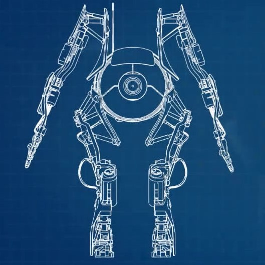

Robotics
Personality Spheres
Introducing Aperture Science's Personality Spheres - your perfect companion during your time in the testing facilities. These little spheres come with advanced AI technology and a variety of fun and engaging personalities to choose from. They will brighten up your day with witty quips, provide listening ears, and make you feel like you're testing with a friend by your side. Get your very own Personality Sphere today and experience the joy of testing with a lovable companion!

Robotic Test-Subjects
Our robotic test subjects are the perfect solution for any testing needs. With their advanced AI and human-like movements, they provide a realistic testing experience while eliminating any safety concerns. Plus, with their durable construction and ability to withstand extreme environments, they can be used for any type of testing scenario. Upgrade your testing facilities today with our state-of-the-art robotic test subjects.
Nanobots
Looking for a fun companion for your time in Aperture Science's testing facilities? Meet our Personality Spheres! With advanced AI technology and personable personalities to choose from, they're the perfect addition to any testing team. Get yours today and start testing with a friend by your side!
Weapons
Turrets
Introducing Aperture Science Turrets: your ultimate line of defense! Our turrets come in four different colors - red, yellow, white, and black - to match any decor. Whether you need protection from pesky intruders or just want a cute and friendly companion, our turrets are the perfect solution. With state-of-the-art targeting technology and advanced AI, our turrets will keep you safe and provide endless entertainment. Get your Aperture Science Turret today and experience the ultimate in security and companionship!
Science Bomb
Introducing Aperture Science's newest invention: the Science Bomb! These explosive devices are specially designed to create controlled scientific reactions, perfect for research and experimentation. With their adjustable timers and customizable payloads, Science Bombs are the ultimate tool for any ambitious scientist. Just imagine the possibilities! Explore new frontiers in science with Aperture Science's Science Bombs.
Thermal Discouragement Beam
Introducing Aperture Science's Thermal Discouragement Beam - the ultimate solution for precision and efficiency in any scientific facility. Our Thermal Discouragement Beams offer unparalleled accuracy and control, allowing you to easily conduct experiments and solve complex problems. With their sleek and durable design, our Thermal Discouragement Beams are the perfect addition to any laboratory. Get yours today and experience the future of scientific research.
Misc
Companion Cube
Looking for a reliable companion to accompany you during your time in the Aperture Science testing facilities? Look no further than the Companion Cube! With its sturdy construction and dependable nature, the Companion Cube is the only thing in the world you can be sure won't stab you in the back. Its comforting presence and soothing pink color will make you feel at ease as you navigate through the complex tests. Don't settle for a flimsy or untrustworthy companion - choose the Companion Cube and experience the ultimate in reliable companionship.
Panels
Looking for reliable and durable panels to assist with your testing needs? Look no further than Aperture Science's top-of-the-line testing panels! Made with the finest materials and designed to withstand even the toughest testing environments, these panels are essential for any successful testing team. With customizable surfaces and cutting-edge technology, these panels are the key to unlocking a world of testing possibilities. Trust in Aperture Science's panels to never let you down and always have your back.
Relaxation Chamber
Welcome to Aperture Science's Relaxation Chamber, where you can take a break from testing and unwind in style. Our state-of-the-art chamber is designed to provide the ultimate in relaxation, with soft lighting, comfortable seating, and soothing music. With advanced technology and a sleek, modern design, the Relaxation Chamber is the perfect place to recharge your batteries and prepare for your next round of testing. So why wait? Treat yourself to some well-deserved relaxation and get your very own Relaxation Chamber today!
Long Fall Boot
The Long Fall Boot is an absolute must-have for any test subject daring enough to take on Aperture Science's most challenging trials. Not only will it keep you safe from the most harrowing falls, but it also boasts a sophisticated mobility enhancer that will let you navigate the facility with ease. And with the Long Fall Boot on your side, you'll never have to worry about costly damage to our priceless technology or finding a new test subject. So why wait? Get your hands on the Long Fall Boot today and take your testing adventures to new heights!
Hard Light Bridge
Looking for a reliable and versatile tool to help you navigate through the tricky and treacherous testing chambers of Aperture Science? Look no further than our Hard Light Bridges! Using advanced technology, these bridges are constructed from solid light and can be placed almost anywhere to create a sturdy and safe pathway for test subjects. Whether you need to cross hazardous materials or navigate through complex mazes, our Hard Light Bridges are the perfect solution. So why risk falling into bottomless pits or getting trapped in dangerous traps? Get your own set of Hard Light Bridges today and experience a smoother and safer testing journey!